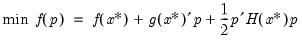
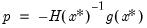
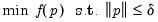
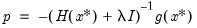
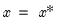
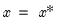
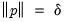
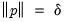

|
|
|




 around the control values  is:
around the control values  is: is the objective function,
is the objective function,  is the gradient, and
is the gradient, and  is the Hessian, then the first-order conditions for a maximum give the following expression for the Newton step:
is the Hessian, then the first-order conditions for a maximum give the following expression for the Newton step: is the trust region maximum step size. In the case where the maximum step constraint is binding, typically the step has a solution
is the trust region maximum step size. In the case where the maximum step constraint is binding, typically the step has a solution is chosen so that |.
is chosen so that |.